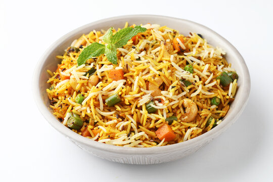

Vegetable Biryani

Description
Fragrant basmati rice cooked with mixed vegetables and aromatic spices.
Ingredients
- 1 cup basmati rice
- 1 cup mixed vegetables (peas, carrots, beans)
- 1 large onion, thinly sliced
- 2 tomatoes, chopped
- 1/4 cup yogurt
- 2 tsp biryani masala
- 1 tsp ginger-garlic paste
- Cashews and raisins for garnish
- Fresh mint and coriander for flavor
Steps
- Sauté onions until golden, add ginger-garlic paste.
- Add tomatoes, vegetables, and spices. Cook for 5 minutes.
- Mix in yogurt and rice. Add water and cook until rice is done.
- Garnish with mint, coriander, cashews, and raisins. Serve hot.